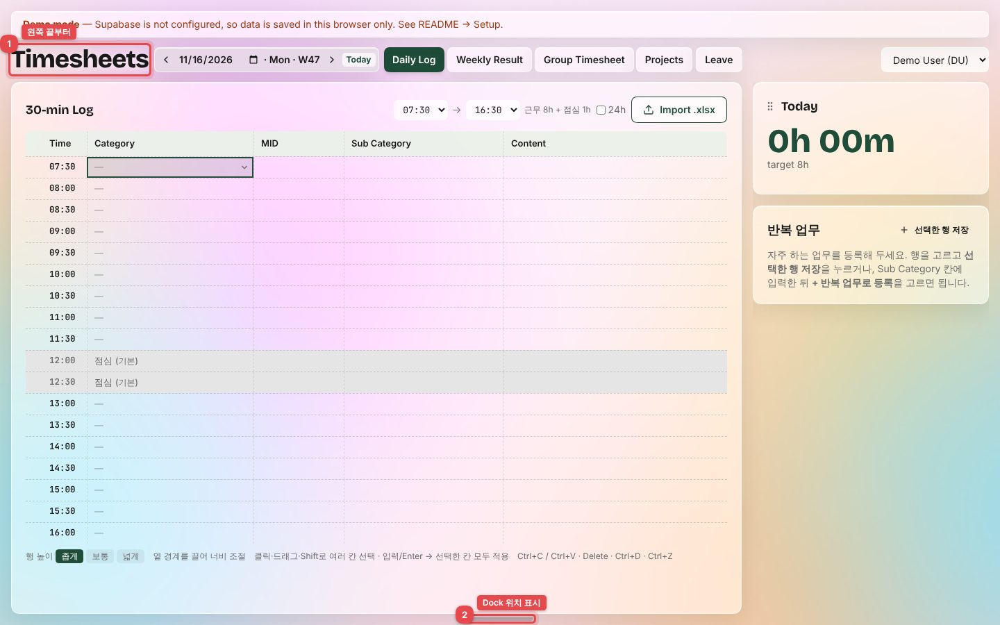
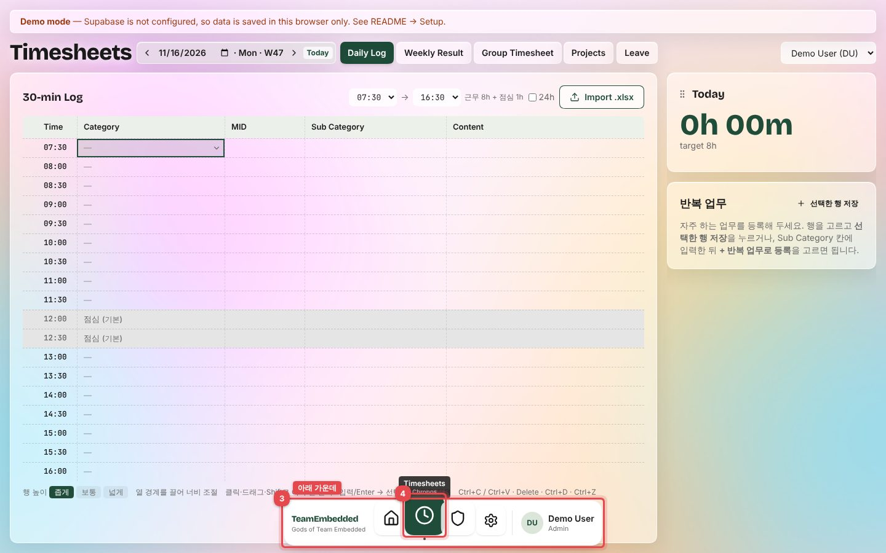
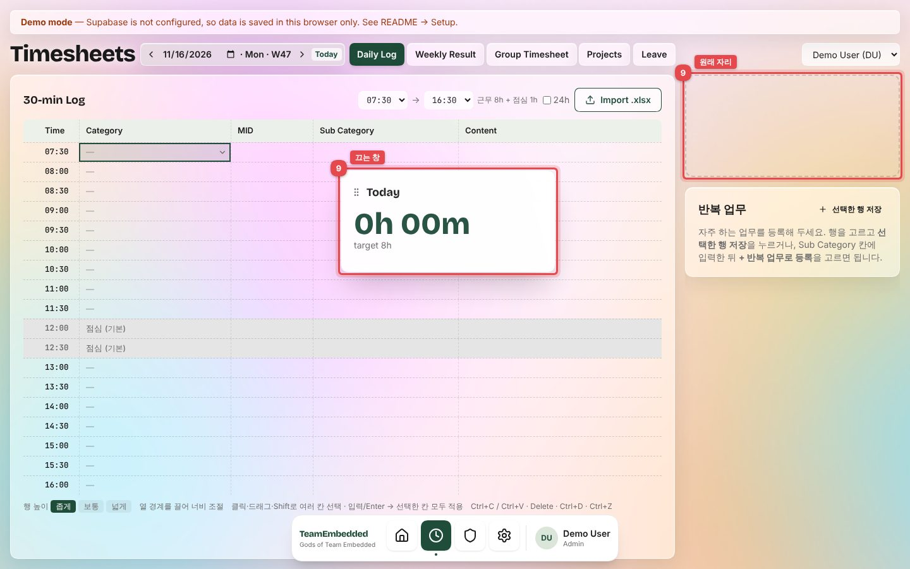
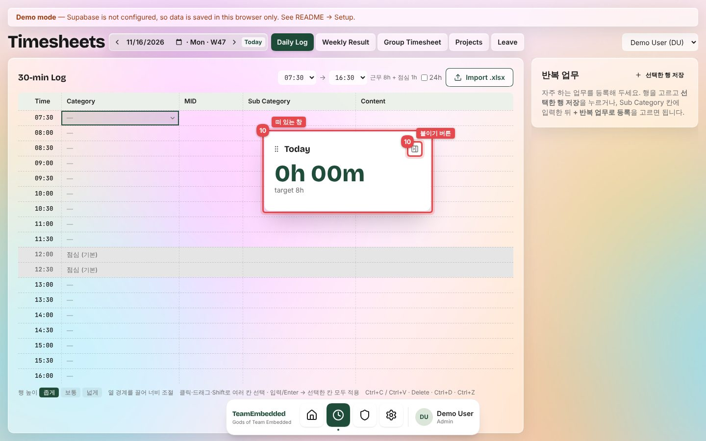
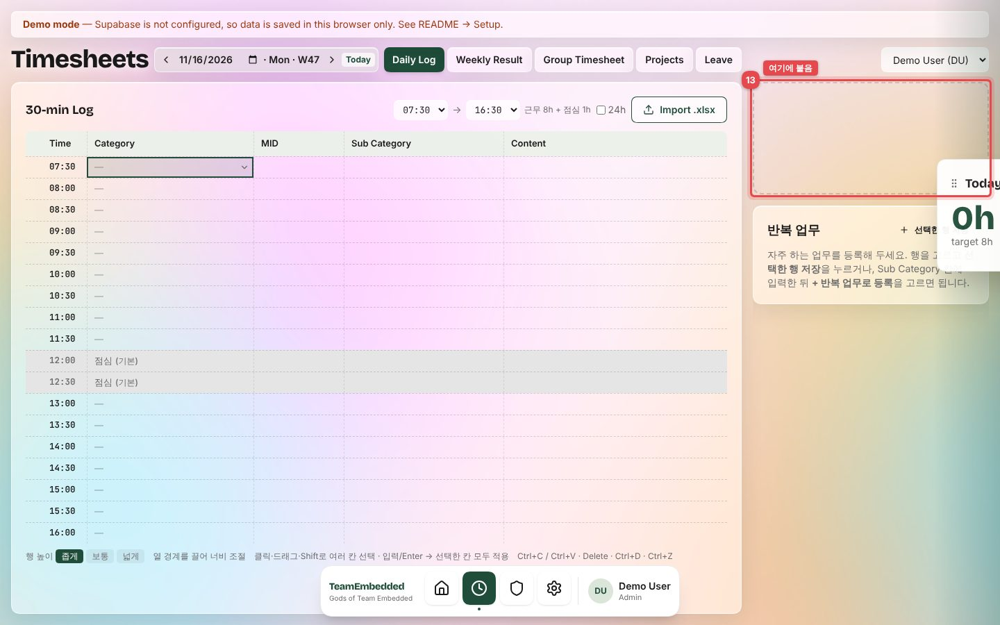
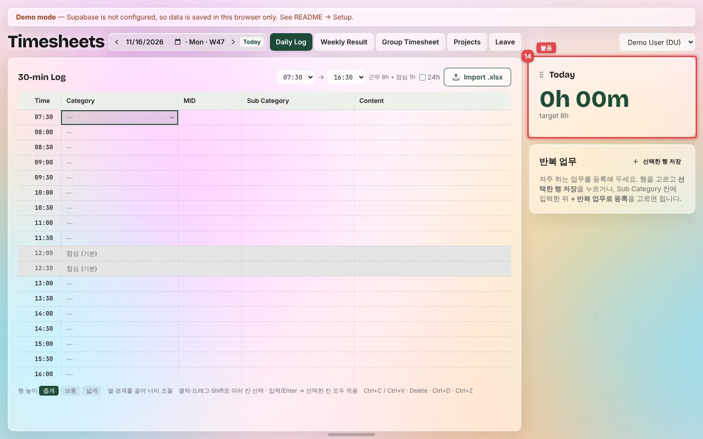
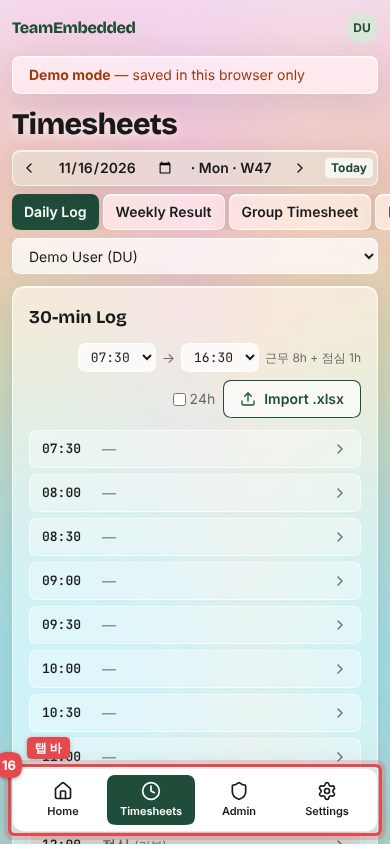

검증 보고서 · E2E
왼쪽 고정 메뉴를 iOS Dock처럼(아래 가운데, 평소엔 숨김). 오른쪽 Today 창을 도킹 창으로: 끌어서 떼어 내고, 오른쪽으로 끌면 자석처럼 붙게.
| # | 테스트 케이스 | 기대 결과 | 실제 결과 | 판정 근거 (Assertion) | 결과 | 증적 |
|---|---|---|---|---|---|---|
| 1 | 왼쪽 메뉴 없음: 화면 왼쪽 끝부터 내용 | 제목 x < 40px (예전 왼쪽 메뉴는 184px) | x = 16px | title.boundingBox().x < 40 | PASS | 화면 1 |
| 2 | Dock은 잠시 뒤 숨는다 | data-shown = 'false' | 'false' | dock.dataset.shown === 'false' (4초 안) | PASS | 화면 1 |
| 3 | 마우스가 아래 끝에 오면 아래 가운데에 나타남 | 가운데 x ≈ 720px, 화면 안 | 가운데 x = 720px, 아래 888px | |center − 720| < 4 && bottom ≤ 900 | PASS | 화면 2 |
| 4 | 아이콘에 마우스를 올리면 커지고 이름이 뜸 | 높이 1.2배 이상, "Timesheets Chronos" | 48px → 65px, "Timesheets Chronos" | after > before × 1.2 && tooltip 에 'Chronos' | PASS | 화면 2 |
| 5 | Home · Timesheets · Admin · Settings, 앱 이름과 사용자 | 아이콘 4개 + TeamEmbedded | 아이콘 4개 + TeamEmbedded | links === 4 && text 에 'TeamEmbedded' | PASS | — |
| 6 | 아이콘을 누르면 이동 | /settings | /settings | pathname === '/settings' | PASS | — |
| 7 | 마우스가 멀어지면 다시 숨음 | data-shown = 'false' | 'false' | dock.dataset.shown === 'false' | PASS | — |
| 8 | Today는 처음에 오른쪽 열에 붙어 있음 | data-docked = 'true' | 'true' | panel.dataset.docked === 'true' | PASS | — |
| 9 | 끄는 동안 원래 자리가 점선 윤곽으로 | 점선 자리 표시, data-near = 'false' | data-near = 'false' | slot 있음 && slot.dataset.near === 'false' | PASS | 화면 3 |
| 10 | 가운데에 놓으면 놓은 자리에 떠 있음 | x ≈ 539, y ≈ 269 (잡은 지점 그대로) | x = 539, y = 269, docked = false | docked === 'false' && 위치 오차 < 3px | PASS | 화면 4 |
| 11 | 떠 있어도 오늘 합계를 보여 줌 | today-total 1개 | 1개 | today-total count === 1 | PASS | — |
| 12 | 새로 고쳐도 같은 자리에 떠 있음 | x = 539 | x = 539, docked = false | docked === 'false' && |x − 이전 x| < 2 | PASS | — |
| 13 | 오른쪽 끝 근처로 끌면 원래 자리가 강조됨(자석) | data-near = 'true' | 'true' | pointer 가 오른쪽 끝 96px 안 → slot.dataset.near === 'true' | PASS | 화면 5 |
| 14 | 거기서 놓으면 다시 붙음 | data-docked = 'true' | 'true' | panel.dataset.docked === 'true' | PASS | 화면 6 |
| 15 | 붙이기 버튼으로도 붙음 | data-docked = 'true' | 'true' | panel.dataset.docked === 'true' | PASS | — |
| 16 | 휴대폰은 하단 탭 바, Dock 없음 | 탭 바 보임, Dock 안 보임 | 탭 바 보임, Dock 안 보임 | !dock.isVisible() | PASS | 화면 7 |
| 17 | 페이지 오류 없음 | 0건 | 0건 | pageerror 수 === 0 | PASS | — |
빨간 테두리와 번호는 표의 테스트 케이스 번호입니다. 그 요소를 확인해 판정했습니다.






